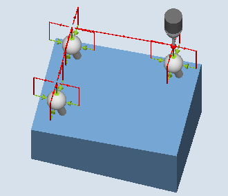

Funktion
Mit dieser Messvariante können 3 gleichgroße Kugeln, befestigt an einer gemeinsamen Basis (Werkstück), vermessen werden.
Das Vermessen der einzelnen Kugeln erfolgt wie bei der Vermessung einer Kugel beschrieben, siehe 3D - Kugel (CYCLE997).
Nach dem Vermessen der 3. Kugel wird bei Korrektur in eine Nullpunktverschiebung (NV) die Lage des Werkstücks, auf dem die Kugeln befestigt sind, als Drehung in der NV korrigiert.
Messprinzip
Die Lage der Mittelpunkte der 3 Kugeln ist als Sollwert in den Parametern XM1 bis ZM3 im aktiven WKS vorgegeben. Die Messung beginnt mit der 1. Kugel und endet mit der 3. Kugel.
Die Positionierung zwischen den Kugeln erfolgt auf einer Geraden in der Höhe der Startposition der 1. Kugel. Die Parametereinstellungen wie z. B. Anzahl der Messpunkte, Durchmesser bestimmen, Durchmesser gelten für alle 3 Kugeln.
|  Messen: 3 Kugeln (CYCLE997), |  Messen: 3 Kugeln (CYCLE997), |
Korrektur der Nullpunktverschiebung (NV)
Nach der Messung der 3. Kugel wird aus den gemessenen Mittelpunkten der Kugeln eine NV berechnet. Diese besteht aus translatorischen Anteilen (Verschiebung) und rotatorischen Anteilen (Drehung) und beschreibt die Lage des Werkstücks, auf dem die Kugeln befestigt sind.
Bei der Korrektur nimmt das Dreieck der ermittelten Kugelmittelpunkte die vorgegebene Mittelpunkt-Sollwert-Position ein (Werkstückkoordinaten). Die Summe der Abweichungen der Kugeln zueinander muss dabei innerhalb des Wertes vom Parameter TVL liegen. Sonst wird nicht korrigiert und es wird ein Alarm ausgegeben.
Voraussetzungen
Der Messtaster muss als Werkzeug mit Werkzeuglängenkorrektur aufgerufen werden und aktiv sein.
Werkzeugtyp des Messtasters:
3D Multi-Taster (Typ 710)
Monotaster (Typ 712)
In der aktiven NV sind die ungefähren Werte für die Lage der Kugeln in Verschiebung und Drehung eingetragen und aktiviert. Der Wert in der Verschiebung der NV bezieht sich auf die 1. Kugel.
Es werden nur kleine Abweichungen von der tatsächlichen Lage des Werkstücks vom Zyklus erwartet.
Der zu messende Kugeldurchmesser sollte erheblich größer als der Messtaster-Kugeldurchmesser sein (ca. 10:1).
| Hinweis |
In Verbindung mit der Funktion "3D-Taster ausrichten" oder bei Verwendung des Messtastertyp 712 ist eine SPOS-fähige Spindel erforderlich. |
Ausgangsposition vor dem Messen
Der Messtaster ist über dem Soll-Kugelmittelpunkt der 1. Kugel in Sicherheitshöhe zu positionieren.
| Hinweis |
Die Messpunkte sind so zu wählen, dass bei den Messungen oder beim Zwischenpositionieren eine Kollision mit einer Kugelbefestigung oder einem anderen Hindernis ausgeschlossen ist. Der Messweg im Parameter DFA ist so groß zu wählen, dass alle Messpunkte innerhalb des Gesamt-Messweges 2 · DFA erreicht werden. Andernfalls kommt keine Messung zustande oder die Messungen sind unvollständig. |
Position nach Messzyklus-Ende
Der Messtaster steht über dem ermittelten Kugelmittelpunkt der 3. Kugel auf Sicherheitshöhe (Höhe wie Ausgangsposition).